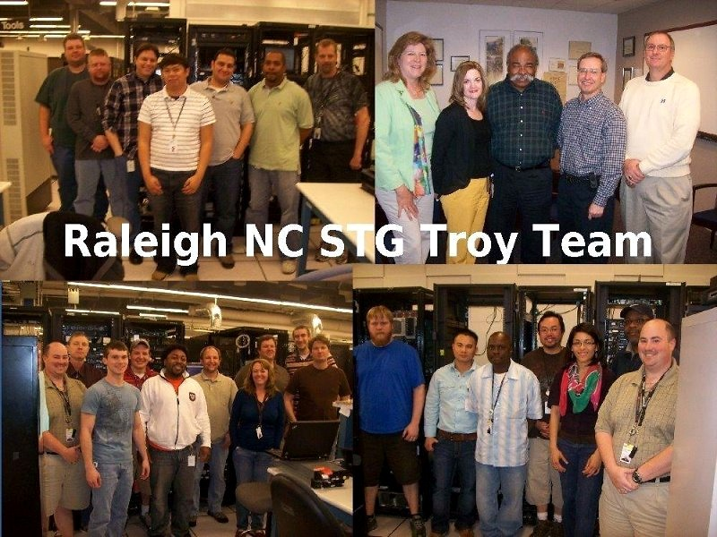

Firmware test engineering for prototype blade servers in IBM's multi-million dollar R&D laboratory.

Raleigh NC STG Troy team · IBM hardware R&D lab
01 · The Role
Firmware test engineer in IBM's hardware R&D lab.
As a Firmware Test Engineer at IBM I tested prototype server hardware and software in a multi-million dollar research and development laboratory. The work happened on hardware that hadn't shipped yet — pre-production blade servers, BIOS/UEFI firmware still in flux, and chassis configurations being validated for the first time.
$M+
R&D lab
2
Server lines tested
2
OS families
02 · What I Did
Pre-release validation of server firmware and hardware.
01
Determined BIOS and UEFI bug root cause analysis for blade servers.
02
Functional experience with development to production release cycles and deadlines.
03
Created and executed test suites for new hardware, firmware, and software.
04
Utilized multiple Linux and Windows operating systems to perform server compatibility tests.
05
Tested IBM Power Flex Chassis during developmental stages prior to public release.
06
Verified integration of IBM System x and Power Blades in the IBM Flex Chassis.
07
Documented and collected detailed technical analysis information of server firmware bugs.
08
Determined server firmware functional verification tests and executed those tests.
09
Executed stress and performance tests on server equipment in order to verify hardware safeguard features.
10
Interpreted developmental hardware schematics for detailed reporting of server hardware and software defects.
03 · Stack
What I worked with.
BIOSUEFIIBM System xIBM Power BladesPower Flex ChassisLinuxWindows ServerHardware schematicsFirmware verificationStress testing